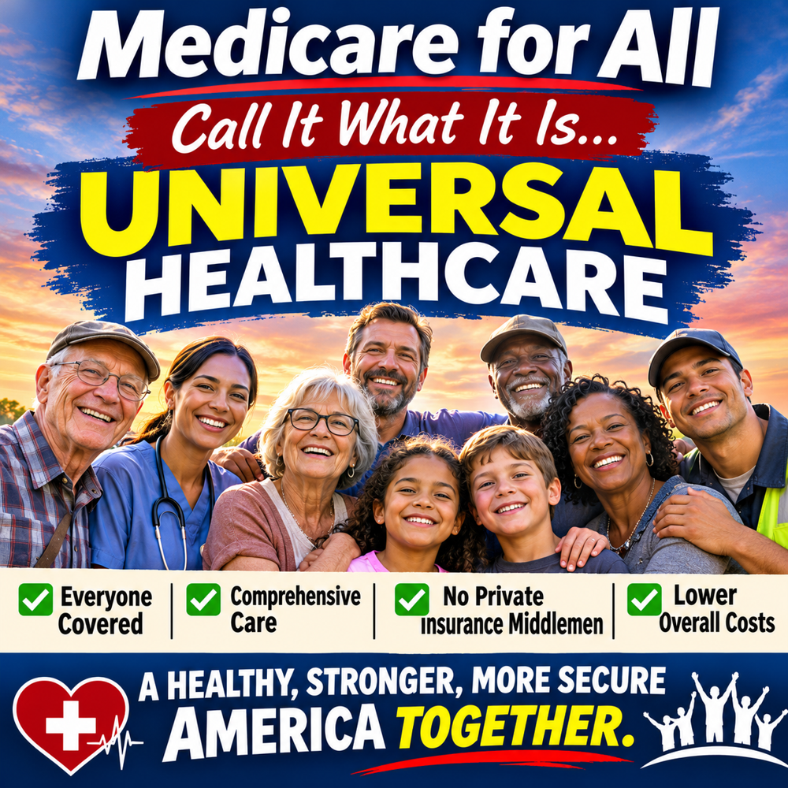

Article 28: Call It What It Is: Universal Healthcare
Why the name Medicare for All can be confused with today’s Medicare.

Download illustrated Word document (.docx)
The goal is universal healthcare—not simply expanding today’s Medicare rules to everyone.
The name creates a misunderstanding
“Medicare for All” is a familiar phrase, but it can also be misleading. Americans know Medicare as a program primarily for older adults and certain younger people with disabilities. They know it can involve Part B premiums, deductibles, coinsurance, supplemental coverage, Medicare Advantage plans, and separate prescription-drug arrangements. When people hear “Medicare for All,” many naturally assume the proposal would give everyone that same complicated arrangement. That is not the comprehensive universal healthcare model advocates are describing.
Universal healthcare is the actual objective
The central idea is straightforward: every resident should be able to obtain medically necessary care without being excluded because of employment, age, income, or preexisting illness. A comprehensive single-payer proposal commonly called Medicare for All would replace much of today’s fragmented insurance financing with one publicly financed coverage system. Universal healthcare is the goal; single-payer is one possible way to finance and organize it. Other countries achieve universal coverage through different arrangements.
What would change for patients
Under comprehensive proposals, covered services can include hospital and physician care, prescription drugs, mental health treatment, and, depending on the bill, dental, vision, hearing, and long-term services. Many proposals eliminate separate premiums, deductibles, and copayments for covered care. Patients would not need to keep an employer-sponsored policy merely to remain insured. But specific benefits and provider access depend on the enacted law, and financing still has to come from public revenue.
Why this is not today’s Medicare
Traditional Medicare generally has Part A and Part B, with cost sharing and important gaps in routine dental, vision, hearing, and long-term custodial care. Medicare Advantage is an alternative way to receive Medicare benefits through private plans; enrollees generally still owe the Part B premium and can face plan networks and cost sharing. A comprehensive universal single-payer proposal is not simply “Medicare Advantage for everyone,” nor does it automatically inherit every rule of existing Medicare.
Illustrative comparison. Specific Medicare for All benefits depend on the proposal; the traditional Medicare column simplifies several rules.
A few important corrections to the comparison
The illustration correctly draws attention to premiums, cost sharing, and gaps in traditional Medicare, but it simplifies some details. Traditional Medicare Part B covers certain outpatient drugs, while Part D is the main optional prescription-drug benefit. Medicare eligibility is not generally means-tested, although higher-income beneficiaries can pay higher premiums. Social Security Disability Insurance (SSDI) has its own eligibility rules; it is not a Medicare income limit. And “see any doctor” under a future program would still depend on which clinicians participate.
A better public conversation
Instead of asking whether Americans want “more Medicare,” we should ask what universal healthcare coverage ought to guarantee: reliable access to necessary care, transparent financing, fewer insurance barriers, and protection from medical bills that destabilize families. Then we should compare actual legislative designs and their costs, trade-offs, and implementation plans.
Why words matter
A name should illuminate the proposal rather than force advocates to explain what it does not mean. “Universal Healthcare” tells people the destination. “Medicare for All” may remain the familiar political shorthand, but the substance is more important than the label. We should judge a proposed system by the coverage it provides, the way it is financed, its effect on patients and medical professionals, and the economic results it can credibly deliver.
Conclusion
We are not talking about handing everyone the Medicare card and the Medicare bills that exist today. We are talking about designing a universal healthcare system in which illness does not become a financial catastrophe. Call it what it is: universal healthcare. Then let us debate the actual design on its merits.
Willis Butts | Medicare for All